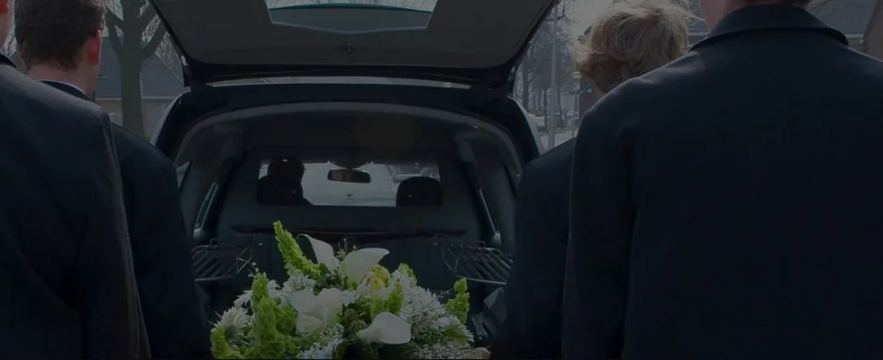

Траурна агенция „Ден и Нощ“
Поемаме цялостната организация при загуба на близък човек — от първите административни стъпки до подготовката и провеждането на церемонията.
Съдействаме за документи и координация с институции и гробищен парк, организираме погребения и кремации, транспорт в страната и чужбина, некролози, цветя, венци, ритуални принадлежности, паметници и грижа за гробни места. Целта ни е семейството да получи ясна организация и конкретна помощ във всеки етап.
Организация от началото до последния детайл
Работим така, че близките да имат едно място за координация и ясна последователност на необходимите действия. По-долу са основните направления, а пълната информация е в раздел „Услуги“.

Погребения и кремации
Организация на церемонията, избор на необходимите услуги и координация на ден, час и място.
Документи и институции
Съдействие за необходимите документи, разрешителни и връзка със съответните служби и гробищен парк.
Транспорт
Специализиран транспорт на покойници в България и при необходимост от или до чужбина.
Некролози, цветя и принадлежности
Изработка на некролози и съобщения, траурна флористика, венци, свещи, раздавки и необходимите ритуални принадлежности.
Паметници и гробни места
Съдействие за паметници, надгробни плочи и последваща поддръжка и почистване на гробни места.
Не знаете откъде да започнете? В отделната страница сме подредили първите действия и какво е необходимо да подготвите.
Вижте първите стъпкиКюстендил, бул. „Цар Освободител“ 27А
На страницата „Контакти“ ще намерите интерактивна карта и двата телефона за връзка.